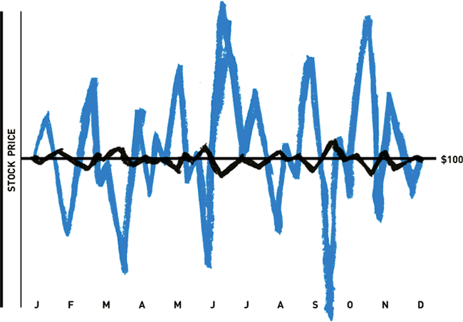
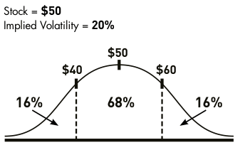
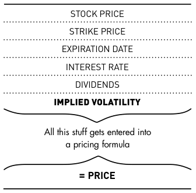
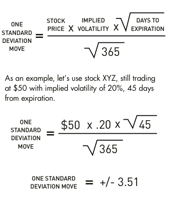

What is volatility?
Or why your option prices can be less stable than a one-legged duck
Some traders mistakenly believe that volatility is based on a directional trend in the stock price. Not so. By definition, volatility is simply the amount the stock price fluctuates, without regard for direction.
As an individual trader, you really only need to concern yourself with two forms of volatility: historical volatility and implied volatility. (Unless your temper gets particularly volatile when a trade goes against you, in which case you should probably worry about that, too.)
Historical volatility is defined in textbooks as “the annualized standard deviation of past stock price movements.” But rather than bore you silly, let's just say it’s how much the stock price fluctuated on a day-to-day basis over a one-year period.
Even if a $100 stock winds up at exactly $100 one year from now, it still could have a great deal of historical volatility. After all, it’s certainly conceivable that the stock could have traded as high as $175 or as low as $25 at some point. And if there were wide daily price ranges throughout the year, it would indeed be considered a historically volatile stock.
JOIN TRADEKING AND GET $1,000 IN FREE TRADE COMMISSION!
Trade commission free when you fund a new account with $5,000 or more. Use promo code FREE1000.† Take advantage of low costs, highly rated service and award-winning platform.
Get started today!
Figure 1: Historical volatility of two different stocks
This chart shows the historical pricing of two different stocks over 12 months. They both start at $100 and end at $100. However, the blue line shows a great deal of historical volatility while the black line does not.
Implied volatility isn’t based on historical pricing data on the stock. Instead, it’s what the marketplace is “implying” the volatility of the stock will be in the future, based on price changes in an option. Like historical volatility, this figure is expressed on an annualized basis. But implied volatility is typically of more interest to retail option traders than historical volatility because it's forward-looking.
Where does implied volatility come from? (hint: not the stork)
Based on truth and rumors in the marketplace, option prices will begin to change. If there’s an earnings announcement or a major court decision coming up, traders will alter trading patterns on certain options. That drives the price of those options up or down, independent of stock price movement. Keep in mind, it’s not the options’ intrinsic value (if any) that is changing. Only the options’ time value is affected.
The reason the options’ time value will change is because of changes in the perceived potential range of future price movement on the stock. Implied volatility can then be derived from the cost of the option. In fact, if there were no options traded on a given stock, there would be no way to calculate implied volatility.
Implied volatility and option prices
Implied volatility is a dynamic figure that changes based on activity in the options marketplace. Usually, when implied volatility increases, the price of options will increase as well, assuming all other things remain constant. So when implied volatility increases after a trade has been placed, it’s good for the option owner and bad for the option seller.
Conversely, if implied volatility decreases after your trade is placed, the price of options usually decreases. That’s good if you’re an option seller and bad if you’re an option owner.
In Meet the Greeks, you’ll learn about “vega”, which can help you calculate how much option prices are expected to change when implied volatility changes.
How implied volatility can help you estimate potential range of movement on a stock
Implied volatility is expressed as a percentage of the stock price, indicating a one standard deviation move over the course of a year. For those of you who snoozed through Statistics 101, a stock should end up within one standard deviation of its original price 68% of the time during the upcoming 12 months. It will end up within two standard deviations 95% of the time and within three standard deviations 99% of the time.
Figure 2: Normal distribution of stock price
In theory, there’s a 68% probability that a stock trading at $50 with an implied volatility of 20% will cost between $40 and $60 a year later. There’s also a 16% chance it will be above $60 and a 16% chance it will be below $40. But remember, the operative words are “in theory,” since implied volatility isn’t an exact science.
Let's focus on the one standard deviation move, which you can think of as a dividing line between “probable” and “not-so-probable.”
For example, imagine stock XYZ is trading at $50, and the implied volatility of an option contract is 20%. This implies there’s a consensus in the marketplace that a one standard deviation move over the next 12 months will be plus or minus $10 (since 20% of the $50 stock price equals $10).
So here’s what it all boils down to: the marketplace thinks there’s a 68% chance at the end of one year that XYZ will wind up somewhere between $40 and $60.
By extension, that also means there’s only a 32% chance the stock will be outside this range. 16% of the time it should be above $60, and 16% of the time it should be below $40.
Obviously, knowing the probability of the underlying stock finishing within a certain range at expiration is very important when determining what options you want to buy or sell and when figuring out which strategies you want to implement.
Just remember: implied volatility is based on general consensus in the marketplace — it’s not an infallible predictor of stock movement. After all, it’s not as if Nostradamus works down on the trading floor.
Which came first: implied volatility or the egg?
If you were to look at an option-pricing formula, you’d see variables like current stock price, strike price, days until expiration, interest rates, dividends and implied volatility, which are used to determine the option’s price.
Market makers use implied volatility as an essential factor when determining what option prices should be. However, you can’t calculate implied volatility without knowing the prices of options. So some traders experience a bit of “chicken or the egg” confusion about which comes first: implied volatility or option price.
In reality, it’s not that difficult to understand. Usually, at-the-money option contracts are the most heavily traded in each expiration month. So market makers can allow supply and demand to set the at-the-money price for at-the-money option contract. Then, once the at-the-money option prices are determined, implied volatility is the only missing variable. So it’s a matter of simple algebra to solve for it.
Once the implied volatility is determined for the at-the-money contracts in any given expiration month, market makers then use pricing models and advanced volatility skews to determine implied volatility at other strike prices that are less heavily traded. So you’ll generally see variances in implied volatility at different strike prices and expiration months.
Figure 3: Option pricing components
Here is all the information you need to calculate an option’s price. You can solve for any single component (like implied volatility) as long as you have all of the other data, including the price.
But for now, let’s stay focused on the implied volatility of the at-the-money option contract for the expiration month you’re planning to trade. Because it’s typically the most heavily traded contract, the at-the-money option will be the primary reflection of what the marketplace expects the underlying stock to do in the future.
However, watch out for odd events like mergers, acquisitions or rumors of bankruptcy. If any of these occur it can throw a wrench into the monkeyworks and seriously mess with the numbers.
Using implied volatility to determine nearer-term potential stock movements
As mentioned above, implied volatility can help you gauge the probability that a stock will wind up at any given price at the end of a 12-month period. But now you might be thinking, “That’s all fine and dandy, but I don’t usually trade 12-month options. How can implied volatility help my shorter-term trades?”
That’s a great question. The most commonly traded options are in fact near-term, between 30 and 90 calendar days until expiration. So here’s a quick and dirty formula you can use to calculate a one standard deviation move over the lifespan of your option contract — no matter the time frame.
Figure 4: Quick and dirty formula for calculating a one standard deviation move over the life of an option
Remember: these quick and dirty calculations aren’t 100% accurate, mainly because they assume a normal distribution instead of a log normal distribution (see “A Brief Aside” below). They’re merely handy in grasping the concept of implied volatility and in getting a rough idea of the potential range of stock prices at expiration. For a more accurate calculation of what implied volatility is saying a stock might do, use TradeKing’s Probability Calculator. This tool will do the math for you using a log normal distribution assumption.
The theoretical world and the real world
In order to be a successful option trader, you don’t just need to be good at picking the direction a stock will move (or won’t move), you also need to be good at predicting the timing of the move. Then, once you have made your forecasts, understanding implied volatility can help take the guesswork out of the potential price range on the stock.
It can’t be emphasized enough, however, that implied volatility is what the marketplace expects the stock to do in theory. And as you probably know, the real world doesn’t always operate in accordance with the theoretical world.
In the stock market crash of 1987, the market made a 20 standard deviation move. In theory, the odds of such a move are positively astronomical: about 1 in a gazillion. But in reality, it did happen. And not many traders saw it coming.
Although it’s not always 100% accurate, implied volatility can be a useful tool. Because option trading is fairly difficult, we have to try to take advantage of every piece of information the market gives us.
A Brief Aside: Normal Distribution vs. Log Normal Distribution
All option pricing models assume “log normal distribution” whereas this section uses “normal distribution” for simplicity’s sake.
As you know, a stock can only go down to zero, whereas it can theoretically go up to infinity. For example, it’s conceivable a $20 stock can go up $30, but it can’t go down $30. Downward movement has to stop when the stock reaches zero. Normal distribution does not account for this discrepancy; it assumes that the stock can move equally in either direction.
In a log normal distribution, on the other hand, a one standard deviation move to the upside may be larger than a one standard deviation move to the downside, especially as you move further out in time. That’s because of the greater potential range on the upside than the downside.
Unless you’re a real statistics geek, you probably wouldn’t notice the difference. But as a result, the examples in this section aren’t 100% accurate, so it’s necessary to point it out.
Start Trading Options for $4.95 + 65¢ per Contract
Today's Trader Network
|
All-Star Trade Report |
Options Guy Blog |
Videos, webinars and more |